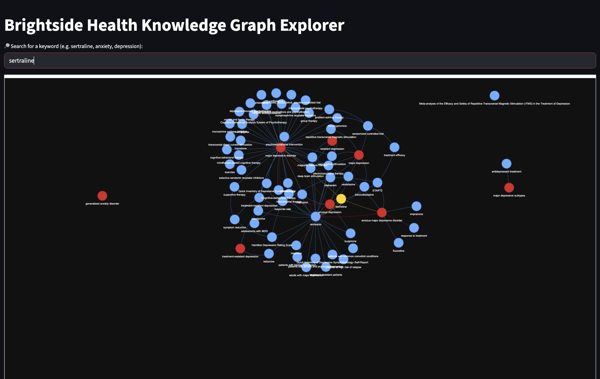
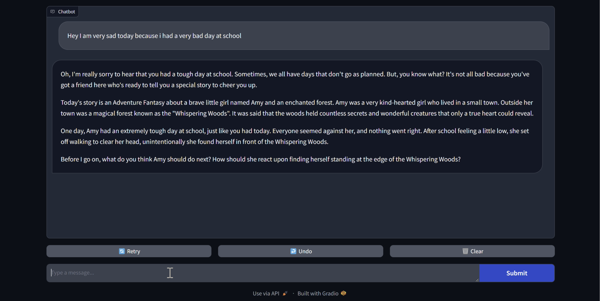

About Me
CS Honors undergrad (B.S., May 2027, GPA 3.95) with experience building
AI/ML–driven products, data pipelines, and backend services end-to-end.
Comfortable turning ambiguous product questions into metrics,
dashboards, experiments, and roadmap. Hands-on with Python, SQL, Git,
Docker, and Gen AI APIs; shipped applications to 200+ users and improved
model performance (+20% accuracy / +25% sensitivity) and system
reliability (-35% classification errors). Excited about Technical
Product Management for enterprise AI infrastructure, cloud-style
services, and GPU-accelerated/Gen AI workflows.
Projects
Project 1: Clinical Interaction Knowledge Graph

Built an end-to-end pipeline to extract entities/relations from PDFs
and notes, then materialize a Neo4j graph via and a Dockerized
stack.
Modeled nodes/edges and enforced simple schema/validation; produced a
curated JSON for reproducibility.
Used an LLM assist (ChatGPT) for entity extraction with guardrails and
deterministic fallbacks, documented assumptions and failure modes.
Languages and Frameworks: Python, Neo4j, Docker, HTML, CSS,
JavaScript, React.
Project 2: FableFrog AI

Built a lightweight text to speech service in less than 36 hours;
served 200+ users.
Implemented REST endpoints, caching, and structured logs; delivered
quick visualizations for teammates.
Wrote endpoint docs and testing procedures to streamline collaboration
and debugging.
Languages and Frameworks: Python, OpenAI API, ElevenLabs, OS,
Gradio.
Project 3: Eyetalk

Built a webcam-based, eye-controlled virtual keyboard for hands-free
typing—look left/right to choose a keyboard side and blink to select
characters.
Implemented real-time gaze + blink tracking using OpenCV + dlib facial
landmarks, with lightweight logic (no GPU/deep-learning requirement)
for stable interaction.
Added audible confirmations and read-back using ElevenLabs
text-to-speech to improve accessibility and feedback during typing.
Languages and Frameworks: Python, OpenCV, dlib, NumPy,
ElevenLabs.